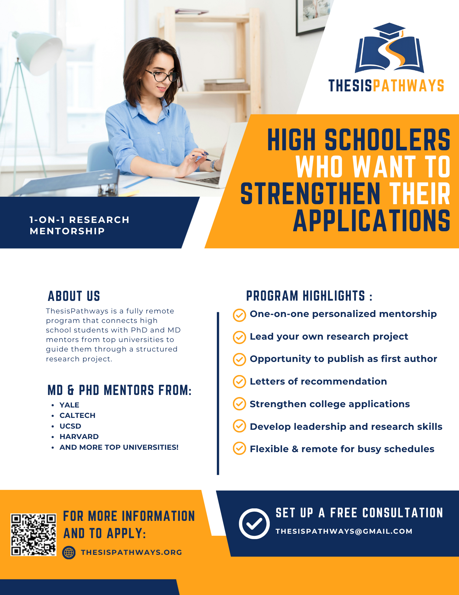

High schooler interested in structured research mentorship with PhD and MD level mentors from top universities? Click here to learn about ThesisPathways!
One minute, students love the flexibility of online learning. The next, they’re overwhelmed, distracted, or completely unmotivated.
A systematic review of 46 studies (2000–2024), written by Li et al. 2025 helps clarify what’s really going on. Online learning can work, but only when it’s designed very carefully.
This study reviews 46 research papers about how high school students experience online learning in different formats, including live classes and self-paced courses. Overall, it finds that students have mixed opinions. Many students appreciate the flexibility that online learning provides, but at the same time, they often struggle with staying focused, managing their time, and feeling connected to teachers and classmates.
A common finding across the research is that students tend to do better when there is strong communication and consistent support, especially from teachers and peers. In general, the study suggests that online learning works best for high school students when it is well structured, includes regular interaction, and offers clear guidance, rather than relying mainly on independent, self-directed work.
One of the clearest takeaways from these studies is that online learning itself isn’t inherently good or bad. The difference comes from how it’s built.
Online learning gives students more freedom, but that alone is not enough for success. Existing research shows that support systems make a huge impact.
The research also consistently highlights the importance of support systems. Students benefit most when they have regular check-ins, timely feedback, and someone who helps them stay on track. This is where mentorship becomes especially relevant, since it provides consistent guidance without removing student independence.
Another important finding is that engagement matters just as much as content. Students are more likely to stay motivated when they can interact with teachers and peers, receive feedback throughout the learning process, and feel part of a learning community. Without that sense of connection, even well-designed material can feel isolating.
The findings from this research connect closely with the core design of ThesisPathways and help clarify why certain elements of the program matter so much.
One of the clearest things across the research is that students tend to struggle when they are expected to work completely independently without enough structure. But at the same time, too much structure can also make them feel restricted or disengaged.
ThesisPathways pairs students with PhD and MD mentors to guide them from idea to published research.
Learn MoreApplications are short and take under 5 minutes to complete.
So there’s this kind of “middle zone” that seems to work best.
For ThesisPathways, this basically supports:
So it’s not just independence for the sake of independence, it’s structured independence.
This connects pretty directly to the ThesisPathways model:
This shows up in the research as one of the biggest gaps in typical online learning. Students often feel like they’re on their own. Mentorship directly addresses that.
The research highlights that students disengage when learning is mostly passive or self-directed without interaction or intention.
ThesisPathways is designed to address this by emphasizing:
This keeps students involved in the process rather than just consuming content.
Overall, the research supports a simple idea:
Students succeed when online learning is structured, interactive, and supported.
That is exactly the model ThesisPathways is built around, combining independence with mentorship, structure with flexibility, and learning with real guidance.
Li, J., Roihan, N. and McGravey, M. (2025), High School Students' Perspectives on Their Online Learning Experiences: A Systematic Literature Review. J Comput Assist Learn, 41: e70064. https://doi.org/10.1111/jcal.70064
Learn more about ThesisPathways and apply today.
